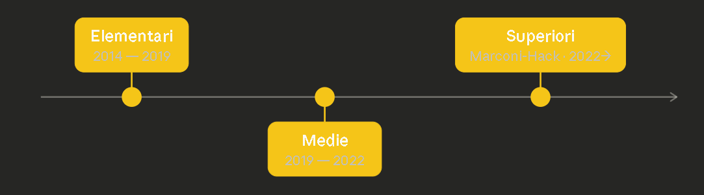

2022 — in corso
ITT — Informatica e Telecomunicazioni
Studio di reti, sistemi operativi, programmazione (Java, Python) e telecomunicazioni.
2019 — 2022
Scuola Media
Diploma con ottima votazione. Prime esperienze con l'informatica.